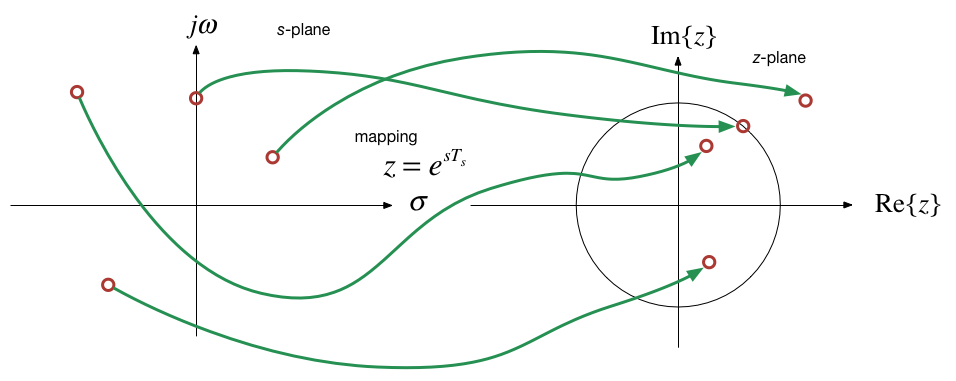

Colophon
The source code for this page is content/dt_systems/2/z_transform.ipynb.
You can view the notes for this presentation as a webpage (HTML).
This page is downloadable as a PDF file.
Scope and Background Reading
This session introduces the z-transform which is used in the analysis of discrete time systems. As for the Fourier and Laplace transforms, we present the definition, define the properties and give some applications of the use of the z-transform in the analysis of signals that are represented as sequences and systems represented by difference equations.
The material in this presentation and notes is based on Chapter 9 of (missing reference) from the Recommended Reading List.
- Introduction
- The Z-Transform
- Properties of the Z-Transform
- Some Selected Z-Transforms
- Relationship between Laplace and Z-Transform
- Stability Regions
In the remainder of this course we turn our attention to how we model and analyse the behaviour of the central block in this picture.
The signals we process in discrete time systems are sequences of values $x[n]$ where $n$ is an index.
A sequence can be obtained in real-time, e.g. as the output of a ADC, or can be stored in digital memory; processed and re-stored; or processed and output in real-time, for example in digital music.
Nature of the systems
- The input to a discrete time system is a squence of values $x[n]$
- The output is also a sequence $y[n]$
- The block represents the operations that convert $x[n]$ into $y[n]$.
- This processing takes the form of a difference equation
- This is analogous to the representation of continuous-time operations by differential equations.
Transfer function model of a DT system
- In CT systems we use the Laplace transform to simplify the analysis of the differential equations
- In DT systems the z-Transform allows us to simplify the analysis of the difference equations
- In CT systems application of the Laplace transform allows us to represent systems as transfer functions and solve convolution problems by multiplication
- The z-transform provides analogous tools for the analysis of DT systems.
By the sampling property of $\delta(t)$
$$x_s(t) = \sum_{n=0}^{\infty}x(nT_s)\delta(t-nT_s)$$Using the Laplace transform pairs $\delta(t) \Leftrightarrow 1$ and $\delta(t-T) \Leftrightarrow e^{-sT}$ we obtain:
By substitution of $z = e^{sT_s}$ and representing samples $x(nT_s)$ as sequence $x[n]$:
$$X(z) = \sum_{n=0}^{\infty}x[n]z^{-n}$$Properties of the z-Transform
| Property | Discrete Time Domain | $$\mathcal{Z}$$ Transform | |
|---|---|---|---|
| 1 | Linearity | $$af_1[n]+bf_2[n]+\cdots$$ | $$aF_1(z)+bF_2(z)+\cdots$$ |
| 2 | Shift of $$x[n]u_0[n]$$ | $$f[n-m]u_0[n-m]$$ | $$z^{-m}F(z)$$ |
| 3 | Left shift | $$f[n-m]$$ | $$z^{-m}F(z)+\sum_{n=0}^{m-1}f[n-m]z^{-n}$$ |
| 4 | Right shift | $$f[n+m]$$ | $$z^{m}F(z)+\sum_{n=-m}^{-1}f[n+m]z^{-n}$$ |
| 5 | Multiplication by $$a^n$$ | $$a^nf[n]$$ | $$F\left(\frac{z}{a}\right)$$ |
| 6 | Multiplication by $$e^{-nsT_s}$$ | $$e^{-nsT_s}f[n]$$ | $$F\left(e^{sT_s}z\right)$$ |
| 7 | Multiplication by $$n$$ | $$nf[n]$$ | $$-z\frac{d}{dz}F(z)$$ |
| 8 | Multiplication by $$n^2$$ | $$n^2f[n]$$ | $$-z\frac{d}{dz}F(z)+z^2\frac{d^2}{dz^2}F(z)$$ |
| 9 | Summation in time | $$\sum_{m=0}^{n}f[m]$$ | $$\frac{z}{z-1}F(z)$$ |
| 10 | Time convolution | $$f_1[n]*f_2[n]$$ | $$F_1(z)F_2(z)$$ |
| 11 | Frequency convolution | $$f_1[n]f_2[n]$$ | $$\frac{1}{j2\pi }\oint {x{F_1}(v){F_2}\left( {\frac{z}{v}} \right)} {v^{ - 1}}dv$$ |
| 12 | Initial value theorem | $$f[0]=\lim_{z\to\infty}F(z)$$ | |
| 13 | Final value theorem | $$\lim_{n\to\infty}f[n]=\lim_{z\to 1}(z-1)F(z)$$ | |
For proofs refer to Section 9.2 of Karris.
After some analysis1, this can be shown to have a closed-form expression2
$$F(z) = \frac{1}{1-az^{-1}}=\frac{z}{z -a}$$Notes
See Karris pp 9-12—9-13 for the details
This function converges only if
$$|z| < |a|$$
and the region of convergence is outside the circle centred at $z=0$ with radius
$$r=|a|$$
This is a special case of the geometric sequence with $a = 1$ so
$$U_0(z) = \frac{1}{1-z^{-1}} = \frac{z}{z - 1}$$Region of convergence is
$$|z| > 1$$This is a geometric sequence with $a = e^{-aT_s}$, so
$$\mathcal{Z}\left\{e^{naT_s}{u_0}[n]\right\} = \frac{1}{1-e^{-aT_s}z^{-1}} = \frac{z}{z-e^{-aT_s}}$$Region of convergence is $$|e^{-aT_s}z^{-1}| < 1$$
We recognize this as a signal $u_0[n]$ multiplied by $n$ for which we have the property $$nf[n] \Leftrightarrow -z\frac{d}{dz}F(z)$$
After applying the property and some manipulation, we arrive at:
$$nu_0[n] \Leftrightarrow \frac{z}{(z-1)^2}$$z-Transform Tables
As usual, we can rely on this and similar analysis to have been tabulated for us and in practice we can rely on tables of transform pairs, such as this one.
| f[n] | F(z) | |
|---|---|---|
| 1 | $$\delta[n]$$ | $$1$$ |
| 2 | $$\delta[n-m]$$ | $$z^{-m}$$ |
| 3 | $$a^nu_0[n]$$ | $$\frac{z}{z-a}\;|z| > a$$ |
| 4 | $$u_0[n]$$ | $$\frac{z}{z-1}\;|z| > 1$$ |
| 5 | $$(e^{-anT_s})u_0[n]$$ | $$\frac{z}{z-e^{-aT_s}}\;|e^{-aT_s}z^{-1}| < 1$$ |
| 6 | $$(\cos naT_s)u_0[n]$$ | $$\frac{z^2 - z\cos aT_s}{z^2 -2z\cos aT_s + 1}\;|z| > 1$$ |
| 7 | $$(\sin naT_s)u_0[n]$$ | $$\frac{z\sin aT_s}{z^2 -2z\cos aT_s + 1}\;|z| > 1$$ |
| 8 | $$(a^n\cos naT_s)u_0[n]$$ | $$\frac{z^2 - az\cos aT_s}{z^2 -2az\cos aT_s + a^2}\;|z| > 1$$ |
| 9 | $$(a^n\sin naT_s)u_0[n]$$ | $$\frac{az\sin aT_s}{z^2 -2az\cos aT_s + a^2}\;|z| > 1$$ |
| 10 | $$u_0[n]-u_0[n-m]$$ | $$\frac{z^m-1}{z^{m-1}(z-1)}$$ |
| 11 | $$nu_0[n]$$ | $$\frac{z}{(z-1)^2}$$ |
| 12 | $$n^2u_0[n]$$ | $$\frac{z(z+1)}{(z-1)^3}$$ |
| 13 | $$[n+1]u_0[n]$$ | $$\frac{z^2}{(z-1)^2}$$ |
| 14 | $$a^n n u_0[n]$$ | $$\frac{az}{(z-a)^2}$$ |
| 15 | $$a^n n^2 u_0[n]$$ | $$\frac{az(z+a)}{(z-a)^3}$$ |
| 16 | $$a^n n[n+1] u_0[n]$$ | $$\frac{2az^2}{(z-a)^3}$$ |
Given that we can represent a sampled signal in the complex frequency domain as the infinite sum of each sequence value delayed by an integer multiple of the sampling time:
$$F(s) = \sum_{n=0}^{\infty}f[n]e^{-nsT_s}$$And by definition, the z-transform of such a sequence is:
$$F(z) = \sum_{n=0}^{\infty}f[n]z^{-n}$$It follows that
$$z = e^{sT_s}$$And
$$s = \frac{1}{T_s}\ln z$$
where
$$|z| = e^{\sigma Ts}$$and
$$\theta = \omega T_s.$$We let
$$\theta = \omega T_s = \omega\frac{2\pi}{\omega_s} = 2\pi\frac{\omega}{\omega_s}$$Hence by substitution:
$$z = e^{\sigma t}e^{j2\pi\omega/\omega_s}$$When $\sigma > 0$ we see that from
$$|z| = e^{\sigma T_s}$$
that
$$|z| > 1$$
The right-half plane of the $s$-domain maps outside the unit circle in the $z$-plane.
Different positive values of $\sigma$ map onto concentric circles with radius greater than unity.
When $\sigma = 0$,
$$|z| = 1$$
and
$$\theta = \frac{2\pi\omega}{\omega_s}$$
All values of $\omega$ lie on the circumference of the unit circle.

Frequencies in the z-Domain
As a consequence of the result for Case III above, we can explore how frequencies (that is is values of $s=\pm j\omega$) map onto the $z$-plane.
We already know that these frequencies will map onto the unit circle and by $\theta = 2\pi\omega/\omega_s$ the angles are related to the sampling frequency.
Let's see how
| $\omega$ [radians/sec] | $$|z|$$ | $\theta$ [radians] |
| 0 | 1 | 0 |
| $\omega_s/8$ | 1 | $\pi/4$ |
| $\omega_s/4$ | 1 | $\pi/2$ |
| $3\omega_s/8$ | 1 | $3\pi/4$ |
| $\omega_s/2$ | 1 | $\pi$ |
| $5\omega_s/8$ | 1 | $5\pi/4$ |
| $3\omega_s/4$ | 1 | $3\pi/2$ |
| $7\omega_s/8$ | 1 | $7\pi/4$ |
| $\omega_s$ | 1 | $2\pi$ |

Mapping z-plane to s-plane
There is no unique mapping of $z$ to $s$ since
$$s = \frac{1}{T_s} \ln z$$but for a complex variable
$$\ln z = \ln z \pm j2n\pi$$This is in agreement with the theoretical idea that in the frequency domain, sampling creates an infinite number of spectra, each of which is centred around $\pm n\omega_s$.
Frequency aliasing
- It's worth observing that any stable complex pole in the $s$-plane $s=-\sigma + j\omega$ will have complex conjugate pair $s = -\sigma - j\omega$.
- Providing $\omega < \omega_s/2$ these poles will be mapped to the upper and lower half-plane of the $z$-plane respectively.
- If $\omega > \omega_s/2$, an upper-half plane pole will be mapped to the lower-half plane and will have an effective frequency of $\omega_s/2 - \omega$.
- Similarly, its conjugate pair will move into the upper-half plane.
This is another way of looking at aliasing.
- Also, any poles with frequency $\omega > \omega_s$ will also be aliased back into into the unit circle.
Problems 1 to 3 in Section 9.10 Exercises of Karris explore the z-Transform